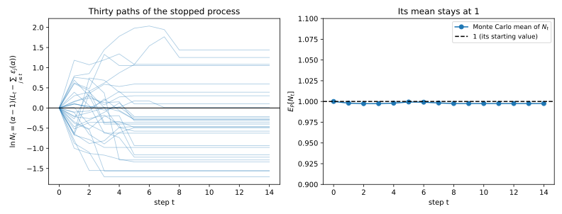
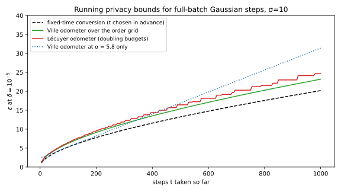
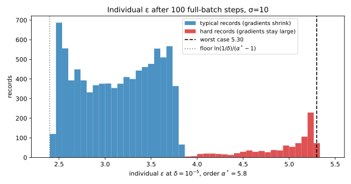
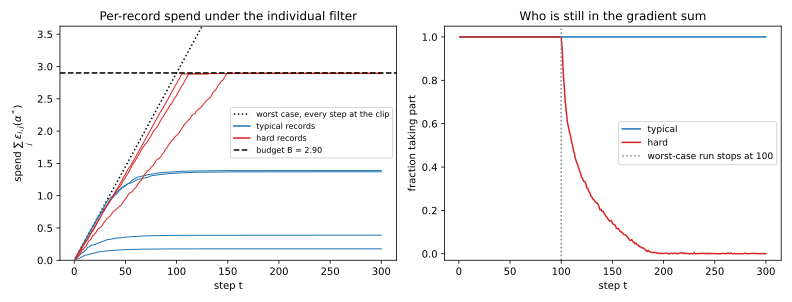

36 Adaptive composition: filters, odometers and individual accounting
36.1 Why this matters
A composition theorem tells you how much privacy a sequence of steps loses in total, given what each step loses. Every composition theorem so far assumes that the privacy parameters of the steps are fixed before the run starts. The mechanisms themselves may be chosen adaptively, after seeing earlier outputs, as in Composition (Section 21.6), but the list of per-step budgets \(\varepsilon_1, \dots, \varepsilon_k\), and the number of steps \(k\) itself, must be known in advance. Real systems break this assumption in three ways:
- Data-dependent stopping. You train until the validation loss stops improving, or an analyst keeps asking queries until the answer looks clear. The number of steps is a function of the outputs.
- Adaptive noise. You lower the noise when training stalls, or spend more on a query whose first answer was surprising. Each \(\varepsilon_t\) depends on the earlier outputs.
- Records that contribute differently. Training with differential privacy (DP) usually means stochastic gradient descent (SGD) with clipped per-record gradients and Gaussian noise, called DP-SGD. A record whose clipped gradient is small moves the noisy sum less than the clip allows. Its actual privacy cost per step is smaller than the worst case, and how much smaller depends on the current model, which depends on the earlier outputs.
In each case the per-step parameters are random variables: you only learn them as the run goes on. It is tempting to wait until the run ends, plug the values that actually occurred into a fixed-parameter theorem, and report the result. That does not work. Section 36.3 shows an analyst who makes the plug-in advanced composition bound fail with probability more than three times its nominal \(\delta = 0.01\), just by choosing when to stop.
36.1.1 The one idea: a running budget needs a theorem about stopping
Once the parameters are adaptive, the question “what is the \(\varepsilon\) of these \(k\) steps?” no longer makes sense, because neither \(k\) nor the \(\varepsilon_t\) are known in advance. It splits into two questions, and each has its own object. A privacy filter answers “may I run one more step without exceeding the budget \(B\)?” It is a stopping rule, and its guarantee is a fixed \((\varepsilon, \delta)\) for whatever transcript the stopped run produces. A privacy odometer answers “how much have I spent so far?” It is a running bound, like the odometer of a car, and because you may stop whenever you like, it must hold at every step simultaneously.
Both need theorems of their own, and the tool behind all of them is the same. Track a quantity built from the privacy loss that, on average, never goes up from one step to the next: a supermartingale, a process whose expected next value, given everything seen so far, is at most its current value. A fair betting game is the picture to keep in mind: your expected wealth after the next bet equals your wealth now. The key fact is that stopping such a process at a time of your choosing cannot raise its mean, so a clever stopping rule cannot manufacture privacy loss. In Rényi differential privacy (RDP), which measures each step by a curve \(\varepsilon_t(\alpha)\) of Rényi divergences indexed by an order \(\alpha > 1\), this is almost free. If the RDP spends at a fixed order \(\alpha\) add up to at most \(B\) on every path, the run is \((\alpha, B)\)-RDP, exactly as if the parameters had been fixed. That one fact gives a filter with the constants of advanced composition, an odometer that costs only a union bound over orders, and per-record accounting in DP-SGD. Table 36.1 lists the results.
| Result | Where it is used |
|---|---|
| Plugging realized \(\varepsilon_t\) into advanced composition fails under data-dependent stopping | Why “report advanced composition of what you spent” is not a valid odometer |
| Filters for pure DP: basic, Rogers et al., Whitehouse et al. | Interactive query systems with a global budget; choosing \(\varepsilon_t\) on the fly |
| The Rényi filter | Any RDP accountant with adaptive noise or adaptive stopping; the base of the next two rows |
| Odometers, and why they cost more | Early stopping; reporting the privacy spent so far |
| Individual (per-record) accounting in DP-SGD | Dropping records once their own budget is spent; per-record \(\varepsilon\) and its caveats |
What you need. The privacy loss of an adaptive composition is a sum of conditional losses (Equation 21.3 in Composition), and advanced composition is Azuma’s inequality applied to that sum (Equation 21.7). Azuma’s inequality and martingales are in Concentration. From this part you need RDP, its composition and Mironov’s conversion (Equation 29.10, Equation 29.17 in Rényi DP), the RDP curves of randomized response and the Gaussian mechanism (Equation 29.9, Equation 29.7), and two facts from Concentrated differential privacy: an \(\varepsilon\)-DP step is \((\alpha, \alpha\varepsilon^2/2)\)-RDP for every \(\alpha\) (Equation 31.6), and \(\rho\)-zero-concentrated differential privacy (\(\rho\)-zCDP) converts to \((\rho + 2\sqrt{\rho\ln(1/\delta)}, \delta)\)-DP (Equation 31.10). Each is restated below where it is used.
Notation. Two datasets are neighbours if they differ in one person’s record. A run has steps \(t = 1, 2, \dots\); step \(t\) releases an output \(y_t\), using a mechanism chosen from the earlier outputs \(y_{<t} = (y_1, \dots, y_{t-1})\). \(P = M(D)\) and \(Q = M(D')\) are the distributions of the whole transcript on two neighbours \(D\) and \(D'\). The probability (or density) that step \(t\) outputs \(y_t\) after the history \(y_{<t}\) is \(P_t(y_t \mid y_{<t})\) on \(D\) and \(Q_t(y_t \mid y_{<t})\) on \(D'\). The privacy loss of an output is the log of how much likelier it is on \(D\) than on \(D'\): positive when it favours \(D\), negative when it favours \(D'\). The conditional loss of step \(t\) is therefore \(L_t = \ln\frac{P_t(y_t \mid y_{<t})}{Q_t(y_t \mid y_{<t})}\), and the loss after \(t\) steps is \(L_{1:t} = L_1 + \dots + L_t\). The parameter \(\varepsilon_t\) (or \(\varepsilon_t(\alpha)\) for RDP) may depend on the history \(y_{<t}\) but not on the output \(y_t\) it is about to price: it is predictable, known just before the step runs. Probabilities and expectations are under \(P\) unless written otherwise. Randomized response at level \(\varepsilon\) reports a person’s bit truthfully with probability \(e^\varepsilon/(1 + e^\varepsilon)\) and flips it otherwise.
36.2 Toolkit: stopping a supermartingale
Each derivation below reuses three facts. The first says that stopping early does not change how you compute the loss. The second says that stopping early cannot raise the mean of a supermartingale. The third turns the second into a bound on the whole path of the process. The first is Fact 2 of Composition, restated for a stopped run; the other two are proved here.
36.2.1 Fact 1 — The loss of a stopped run is the sum of the losses of the steps it ran
The probability of a whole transcript is built one step at a time: the probability of \(y_1\), times the probability of \(y_2\) given \(y_1\), and so on. This is the chain rule of probability. So the transcript \((y_1, \dots, y_t)\) has density \(\prod_{j \le t}p_j(y_j \mid y_{<j})\) under \(P\) and the same product of \(q_j\) under \(Q\). The ratio of the two products is the product of the step-by-step ratios, and the logarithm turns that product into a sum, so \(L_{1:t} = \sum_{j\le t}L_j\) (Equation 21.3).
Now let the run stop at a random time \(T\) that is decided from the outputs alone. The stopped transcript \((y_1, \dots, y_T)\) still has density \(\prod_{j \le T}p_j\). The reason is that the decision to stop after \(y_T\) is a function of \(y_{\le T}\): given those outputs, it happens with probability 1 or 0, and that probability is the same under \(P\) and \(Q\). A factor that is equal in the numerator and the denominator cancels from the ratio. So the loss of the stopped run is \(L_{1:T}\), the sum of the losses of the steps it ran.
36.2.2 Fact 2 — Optional stopping: a stopped supermartingale keeps its mean at most where it started
Think of \(N_t\) as your wealth after \(t\) bets in a game that is fair or unfavourable to you. Each bet, on average, leaves your wealth where it was or lowers it. You may decide when to quit, looking at everything that has happened, but not at the future. The fact says that no such quitting rule can make your expected final wealth larger than your starting wealth.
In symbols, a process \(N_0, N_1, \dots\) with \(N_t\) a function of \(y_{\le t}\) is a supermartingale if \(\mathbb E[N_t \mid y_{<t}] \le N_{t-1}\) for every \(t\): given the history, the expected next value is at most the current one. It is a martingale if equality holds, the fair game. A stopping time \(T\) is a random step such that the event \(\{T \ge t\}\), “the run takes step \(t\)”, is decided by \(y_{<t}\): you decide whether to take a step before seeing its result. If \(T \le n\) for a fixed \(n\), then \[\mathbb E[N_T] \le \mathbb E[N_0]. \tag{36.1}\]
Proof. The idea is to write the stopped process as a running total of the increments it actually collects, and to show that each collected increment has non-positive mean. Write \(T\wedge t = \min(T, t)\) for the time the stopped process has reached by step \(t\).
- Write the stopped process as a sum of increments. Up to step \(t\), the stopped process gains the increment \(N_t - N_{t-1}\) only if the run takes step \(t\), that is if \(T \ge t\). So \(N_{T\wedge t} = N_{T\wedge(t-1)} + \mathbf 1\{T \ge t\}(N_t - N_{t-1})\), where the indicator \(\mathbf 1\{T \ge t\}\) is 1 when the run takes step \(t\) and 0 otherwise.
- Each collected increment has non-positive mean. The indicator is decided by \(y_{<t}\), so once you condition on \(y_{<t}\) it is a known constant and comes out of the conditional expectation: \(\mathbb E[\mathbf 1\{T\ge t\}(N_t - N_{t-1}) \mid y_{<t}] = \mathbf 1\{T \ge t\}\big(\mathbb E[N_t \mid y_{<t}] - N_{t-1}\big) \le 0\), because the bracket is non-positive by the supermartingale property. This is where it matters that the stopping decision does not look at \(y_t\).
- Add up the steps. Take expectations and sum over \(t = 1, \dots, n\). Each step adds a non-positive amount to the mean, so \(\mathbb E[N_{T\wedge n}] \le \mathbb E[N_0]\). Since \(T \le n\), \(T \wedge n = T\).
Within a fixed horizon, then, no rule for when to quit turns a fair coin game (\(N_t\) = your wealth) into a winning one; this is the reason a filter works. The horizon matters in general: with unlimited time and unlimited credit, “quit when you are one ahead” wins a fair coin game with probability 1, because the walk eventually reaches +1, at the price of arbitrarily deep debt along the way. For the non-negative processes used below (\(N_t \ge 0\), so no debt) the horizon can be dropped. If \(T\) may be infinite, apply Equation 36.1 to \(T \wedge n\) and let \(n \to \infty\): \(N_{T\wedge n} \to N_T\) on \(\{T < \infty\}\), and Fatou’s lemma (the mean of a limit of non-negative variables is at most the limit of the means) gives \(\mathbb E[N_T\mathbf 1\{T < \infty\}] \le \mathbb E[N_0]\). The three-step table in Section 36.5 walks through the computation outcome by outcome.
36.2.3 Fact 3 — Ville’s inequality: a supermartingale rarely ever gets large
Markov’s inequality says that a non-negative variable with mean 1 is at least \(c\) with probability at most \(1/c\). Applied to \(N_n\) at one fixed time \(n\), it bounds the chance of being large at that time. Ville’s inequality says the same bound holds for the chance of being large at any time up to \(n\). The reason is Fact 2: stop the first time the process reaches \(c\). That is a legitimate stopping rule, so the stopped value still has mean at most 1, and it is at least \(c\) on every path that ever got there. For example, in a fair game you start with wealth 1, so the chance that your wealth ever reaches 10 is at most \(1/10\), however long you play.
If \(N_t \ge 0\) is a supermartingale with \(N_0 = 1\), then for every \(c > 0\) and every horizon \(n\), \[\Pr\big[\exists\, t \le n: N_t \ge c\big] \le \frac1c. \tag{36.2}\]
Proof.
- Stop at the first crossing. Let \(T\) be the first \(t\) with \(N_t \ge c\), or \(n\) if there is none. Whether \(T \ge t\) depends only on \(N_1, \dots, N_{t-1}\) (it means none of them reached \(c\)), so \(T\) is a stopping time bounded by \(n\).
- The stopped process keeps its mean. By Fact 2 (Equation 36.1), \(\mathbb E[N_T] \le N_0 = 1\).
- Apply Markov’s argument to the stopped value. On the event that the process reaches \(c\) by time \(n\), the run stopped there, so \(N_T \ge c\); elsewhere \(N_T \ge 0\). So \(N_T\) is at least \(c\) times the indicator of that event, and taking means, \(c\Pr[\exists\,t \le n: N_t \ge c] \le \mathbb E[N_T] \le 1\).
The events \(\{\exists\,t \le n: N_t \ge c\}\) grow with \(n\), and their union is \(\{\exists\,t: N_t \ge c\}\), so the same bound holds with no horizon at all. This is Markov’s inequality, but for the whole path at once instead of one fixed time, and at no extra cost. It is the tool for odometers.
36.3 Why adaptively chosen parameters break the usual theorems
36.3.1 Context
Advanced composition says that \(k\) steps of \(\varepsilon\)-DP, with \(k\) and \(\varepsilon\) fixed, have privacy loss at most \(\varepsilon\sqrt{2k\ln(1/\delta)} + k\varepsilon\tanh(\varepsilon/2)\) except with probability \(\delta\) (Equation 21.8). The first term is the typical spread of a sum of \(k\) bounded losses, the second is their mean. A tempting shortcut for adaptive runs is to apply it ex post: stop whenever you like, then report advanced composition of the parameters you actually used. Rogers, Roth, Ullman & Vadhan (2016) showed that this shortcut is not valid, and that a correct running bound must be larger. The problem is the choice of the stopping time: a bound that fails with probability \(\delta\) at each fixed time can fail far more often at a time chosen by looking at the outputs.
36.3.2 Statement
The two objects of this chapter are defined by Rogers et al. (2016); the form below follows Whitehouse, Ramdas, Rogers & Wu (2023). Let each step be \(\varepsilon_t\)-DP conditionally on the past, meaning that whatever the history \(y_{<t}\), the mechanism run at step \(t\) is \(\varepsilon_t\)-DP, with \(\varepsilon_t\) predictable.
A privacy filter with budget \((\varepsilon_g, \delta)\) is a rule that, before each step, looks at the parameters \(\varepsilon_1, \dots, \varepsilon_t\) so far, including the one about to run, and says continue or halt. It is valid if the stopped run \(y_{1:T}\) is \((\varepsilon_g, \delta)\)-DP for every analyst, however the analyst picks the steps and their parameters.
A privacy odometer with confidence \(\delta\) is a sequence of functions \(U_t(\varepsilon_1, \dots, \varepsilon_t)\), a running bound computed from the parameters spent so far. It is valid if, for every analyst and every pair of neighbours, the probability that the loss ever exceeds the running bound is at most \(\delta\): \[\Pr\big[\exists\, t: L_{1:t} > U_t\big] \le \delta. \tag{36.3}\] The “there exists a \(t\)” is the point. Because you may stop at any time, the bound you report at the time you stop is only safe if it holds at all times at once.
The plug-in odometer fails. Let every step be randomized response with \(\varepsilon = 0.1\) on the same person’s bit, and let \(U_t = t\varepsilon\tanh(\varepsilon/2) + \varepsilon\sqrt{2t\ln(1/\delta)}\), advanced composition of the realized parameters. For each fixed \(t\), \(\Pr[L_{1:t} > U_t] \le \delta\). But an analyst who stops the first time \(L_{1:t} > U_t\) makes the bound fail with the probability in Table 36.2, which exceeds \(\delta\) and keeps growing with the horizon.
| Horizon \(n\) | 10 | 100 | 1000 | 10,000 | worst single fixed \(t \le 1000\) |
|---|---|---|---|---|---|
| \(\delta = 0.05\): \(\Pr[\exists\,t \le n: L_{1:t} > U_t]\) | 0.0110 | 0.0575 | 0.1004 | 0.1424 | 0.0110 (\(t = 17\)) |
| \(\delta = 0.01\): \(\Pr[\exists\,t \le n: L_{1:t} > U_t]\) | 0.0000 | 0.0090 | 0.0202 | 0.0318 | 0.0016 (\(t = 21\)) |
| \(\delta = 10^{-5}\): \(\Pr[\exists\,t \le n: L_{1:t} > U_t]\) | 0 | \(3.12\times10^{-6}\) | \(1.80\times10^{-5}\) | \(3.69\times10^{-5}\) | \(8.18\times10^{-7}\) (\(t = 758\)) |
36.3.3 Derivation
The argument has two halves. The first checks that the plug-in bound is a correct bound at every fixed time. The second shows that an analyst who stops on the data turns those correct fixed-time bounds into a wrong running bound.
The fixed-\(t\) bound holds.
- The loss is a walk. Take a person whose bit is 1 in \(D\) and 0 in \(D'\). Each randomized-response report of 1 has probability \(e^\varepsilon/(1 + e^\varepsilon)\) on \(D\) and \(1/(1 + e^\varepsilon)\) on \(D'\), so its loss is \(\ln e^\varepsilon = +\varepsilon\), and a report of 0 has loss \(-\varepsilon\). Under \(D\) the loss is \(+\varepsilon\) with probability \(e^\varepsilon/(1 + e^\varepsilon)\), so its mean is \(\varepsilon\big(\frac{e^\varepsilon}{1 + e^\varepsilon} - \frac{1}{1 + e^\varepsilon}\big) = \varepsilon\frac{e^\varepsilon - 1}{e^\varepsilon + 1} = \varepsilon\tanh(\varepsilon/2)\), which is \(0.1 \times \tanh(0.05) = 0.004996\) for \(\varepsilon = 0.1\) (step 3 of Section 21.3). The total loss \(L_{1:t}\) is a random walk that moves up or down by \(\varepsilon\) at each step, with a slight upward drift.
- Center it. Subtract the drift: \(M_t = L_{1:t} - t\varepsilon\tanh(\varepsilon/2)\). Each step adds a term with mean zero given the past, so \(M_t\) is a martingale, and its increments lie in an interval of length \(2\varepsilon\) (from \(-\varepsilon\) to \(+\varepsilon\), shifted by the mean).
- Azuma. Azuma’s inequality (Concentration) says that a martingale with \(t\) increments, each confined to an interval of length \(\ell\), exceeds \(s\) with probability at most \(\exp(-2s^2/(t\ell^2))\). With \(\ell = 2\varepsilon\) this is \(\Pr[M_t \ge s] \le \exp(-2s^2/(4t\varepsilon^2))\). Setting this to \(\delta\) and solving, \(s^2 = 2t\varepsilon^2\ln(1/\delta)\), so \(s = \varepsilon\sqrt{2t\ln(1/\delta)}\). Adding the drift back, \(\Pr[L_{1:t} > U_t] \le \delta\) at each fixed \(t\). The exact probabilities are smaller still: over every \(t \le 1000\) the largest is 0.0110 (at \(t = 17\)) for \(\delta = 0.05\), because Azuma assumes the worst variance an increment in that interval could have.
Stopping when ahead breaks it.
- The analyst’s rule. Run steps until \(L_{1:t} > U_t\), then stop. The analyst sees only outputs, and \(L_{1:t}\) is a function of them (it is \(\varepsilon\) times the number of reports of 1 minus the number of reports of 0), so this is a legitimate stopping rule: it decides whether to continue from what has already been released.
- The event the odometer must control. At the stopping time \(T\), the claim “\(L_{1:T} \le U_T\)” fails exactly when the walk crossed the boundary at some \(t \le n\), because that is when the analyst stops. So the failure probability is the crossing probability \(\Pr[\exists\,t\le n: L_{1:t} > U_t]\), not the fixed-\(t\) probability. The first is a probability over the whole path and can be much larger than the largest of the second.
- Compute it exactly. \(L_{1:t}/\varepsilon\) moves on the integers by \(\pm1\). Propagate its distribution step by step, and at each \(t\) remove the probability mass that sits above \(U_t/\varepsilon\), since those paths have crossed and stopped. The total removed mass is the crossing probability (Table 36.2).
- It tends to 1. The boundary sits \(\varepsilon\sqrt{2t\ln(1/\delta)}\) above the mean, a fixed multiple of \(\sqrt t\). The centered steps take values \(\pm\varepsilon\) minus the mean \(\varepsilon\tanh(\varepsilon/2)\), so their variance is the mean square minus the squared mean, \(\varepsilon^2 - \varepsilon^2\tanh^2(\varepsilon/2) = \varepsilon^2/\cosh^2(\varepsilon/2)\), and their standard deviation is \(\varepsilon\,\mathrm{sech}(\varepsilon/2)\). The law of the iterated logarithm (a cited fact; see Durrett in the References) says how far a random walk reaches along its whole path: for any \(\eta > 0\), the centered walk exceeds \((1 - \eta)\,\varepsilon\,\mathrm{sech}(\varepsilon/2)\sqrt{2t\ln\ln t}\) infinitely often with probability 1. That curve grows slightly faster than any fixed multiple of \(\sqrt t\), because of the slowly growing \(\ln\ln t\). Since \(\ln\ln t\) eventually exceeds \(\ln(1/\delta)/\mathrm{sech}^2(\varepsilon/2)\), the walk crosses the boundary with probability 1, and the crossing probability by step \(n\) tends to 1 as \(n \to \infty\).
- Every odometer pays for it. Rogers et al. (2016, Theorem 6.1) turn this into a lower bound: no valid odometer can exceed the mean term by only \(o\big(\sqrt{\sum_t\varepsilon_t^2\,\ln(\ln n/\delta)}\big)\), that is, by an amount that becomes negligible next to that square root. Their construction is this one, stop when ahead, with \(n\) steps of \(\varepsilon = 1/n\). So the price is an extra \(\ln\ln n\) inside the logarithm, where a fixed-time bound has \(\ln(1/\delta)\) alone.
36.3.4 Interpretation
The theorem was never wrong; its use was. Advanced composition bounds the loss at a time fixed in advance. A data-dependent time is a different random variable, and an analyst who stops when the loss happens to be high selects exactly the paths where the bound fails.
Fixed-\(t\) bounds have slack, but not enough to absorb this. At \(\delta = 0.05\) the plug-in bound fails at a single time \(t \le 1000\) with probability at most 0.0110, but over \(10^4\) steps with probability 0.1424. A valid odometer must pay for the union over times, which, by step 8, costs at least an extra \(\ln\ln n\) inside the logarithm (Rogers et al., Theorem 6.1).
A small \(\delta\) shrinks the price, but not the failure. Rogers et al. point out that for \(\delta\) far below \(1/n\), \(\ln(\ln n/\delta) = \ln(1/\delta) + \ln\ln n\) is \(\ln(1/\delta)\) plus a small additive term, so a valid odometer costs little more than the fixed-time bound. The plug-in bound is still invalid there: at \(\delta = 10^{-5}\) it is crossed by step \(10^4\) with probability \(3.69\times10^{-5}\), 3.69 times \(\delta\) (Table 36.2).
Filters are different. A filter fixes the budget in advance and only asks whether the next step fits, so there is no running claim for the analyst to catch out at a bad moment. That question turns out to be answerable with no \(\ln\ln\) loss (Section 36.4). So filters and odometers are genuinely different objects once parameters are adaptive, which they are not when parameters are fixed.

36.3.5 Example
With \(\delta = 0.01\), the plug-in bound after \(t = 100\) steps is the mean term plus the spread term: \(100 \times 0.004996 + 0.1\sqrt{200\ln 100} = 3.534\). Figure 36.1 (left) shows typical runs. Most never come near the boundary, but a few cross it early, where it is narrow because \(\sqrt t\) is still small, and the analyst freezes them there. By \(n = 10^4\), a fraction 0.0318 of runs have crossed (Table 36.2), so a report “\(\varepsilon = U_T\) with \(\delta = 0.01\)” is wrong \(0.0318/0.01 = 3.18\) times as often as it claims. At \(\delta = 0.05\) the crossing probability reaches 0.1424, \(0.1424/0.05 = 2.85\) times \(\delta\).
36.3.6 Check yourself
- Basic composition, \(|L_{1:t}| \le \sum_{j\le t}\varepsilon_j\), does not suffer from this problem. Why? (It holds for every output, not with high probability, so there is no bad event for the stopping rule to select. Summing realized parameters is a valid odometer and filter for pure DP, as Section 21.6 notes.)
- Is the stop-when-ahead analyst unrealistic, since it needs the privacy loss? (No. Here the loss is a function of the outputs, and in general an analyst can stop on any statistic correlated with it, such as “the answers look unusual”. The definitions quantify over all analysts, so the bound must survive the worst one.)
36.4 Filters for pure differential privacy
36.4.1 Context
You run an interactive system with a global budget \((\varepsilon_g, \delta)\). Each query comes with its own \(\varepsilon_t\), chosen after seeing the earlier answers. Before each query you need a rule that says whether it may run. The simplest rule sums the \(\varepsilon_t\); it is exact but its total grows like \(k\), the number of steps. Advanced composition grows like \(\sqrt k\) but, as Section 36.3 showed, cannot be applied ex post without care. Rogers et al. (2016) gave the first valid \(\sqrt k\) filter, with worse constants than advanced composition. Whitehouse et al. (2023), and independently the Rényi route of Feldman & Zrnic (2021), closed the gap.
36.4.2 Statement
All three filters below are valid for steps that are \(\varepsilon_t\)-DP conditionally on the past (pure DP, \(\delta_t = 0\)), with \(\varepsilon_t\) predictable. Each computes one statistic of \(\varepsilon_1, \dots, \varepsilon_t\), including the step about to run, and says continue while it is at most \(\varepsilon_g\). They differ in the statistic: the first adds the budgets, the other two add a mean term and a square-root spread term, as advanced composition does.
- Basic filter (Rogers et al. 2016, Theorem 3.4). The statistic is the plain sum of the budgets: continue while \(\sum_t\varepsilon_t \le \varepsilon_g\). The stopped run is \((\varepsilon_g, 0)\)-DP.
- Rogers et al. filter (2016, Theorem 5.1), for \(\delta < 1/e\). The statistic is a mean term, the sum of each step’s bound on its expected loss, plus a spread term like advanced composition’s \(\sqrt{2V\ln(1/\delta)}\), where \(V = \sum_t\varepsilon_t^2\) plays the role of the variance. Because \(V\) is now random, the spread term is inflated: \(V\) is padded by \(x = \varepsilon_g^2/(28.04\ln(1/\delta))\), and multiplied by a logarithmic factor in \(V/x\). Continue while \[K = \sum_t\frac{\varepsilon_t(e^{\varepsilon_t} - 1)}{2} + \sqrt{2(V + x)\Big(1 + \tfrac12\ln\big(\tfrac Vx + 1\big)\Big)\ln(1/\delta)} \le \varepsilon_g. \tag{36.4}\]
- Whitehouse et al. filter (2023, Theorem 2). The statistic is advanced composition itself, spread term \(\sqrt{2\ln(1/\delta)\sum_t\varepsilon_t^2}\) plus mean term \(\frac12\sum_t\varepsilon_t^2\), with no penalty for adaptivity. Continue while \[\sqrt{2\ln(1/\delta)\textstyle\sum_t\varepsilon_t^2} + \tfrac12\textstyle\sum_t\varepsilon_t^2 \le \varepsilon_g. \tag{36.5}\]
The last two give \((\varepsilon_g, \delta)\)-DP. Compare Equation 36.5 with advanced composition for unequal steps: it is the same formula with the \(\tanh\) mean term \(\varepsilon_t\tanh(\varepsilon_t/2)\) replaced by the slightly larger \(\varepsilon_t^2/2\). It is larger because \(\tanh x \le x\), so \(\varepsilon_t\tanh(\varepsilon_t/2) \le \varepsilon_t \cdot \varepsilon_t/2\); the difference is about \(\varepsilon_t^4/24\) per step, from the next term of the series \(\tanh x = x - x^3/3 + \dots\). For fixed parameters it is exactly the bound you get by composing in zCDP, so adaptivity costs essentially nothing.
36.4.3 Derivation
Basic filter. The idea is that a pure-DP step bounds the loss of every single output, not just its typical size, so the sum of the budgets bounds the loss of every stopped transcript.
- Each step’s loss is bounded on every output. \(\varepsilon_t\)-DP says no output is more than \(e^{\varepsilon_t}\) times likelier on one neighbour than on the other, in either direction. Taking logarithms, \(|L_t| \le \varepsilon_t\) for every output.
- So is the stopped run’s loss. By Fact 1 the stopped run has loss \(L_{1:T} = \sum_{t\le T}L_t\), so \(|L_{1:T}| \le \sum_{t\le T}\varepsilon_t \le \varepsilon_g\) on every path, because the filter never lets the sum pass \(\varepsilon_g\).
- A bounded loss is pure DP. A loss bounded by \(\varepsilon_g\) on every output means \(P(y) \le e^{\varepsilon_g}Q(y)\) for every transcript \(y\). Summing over the transcripts in any event gives \(P(E) \le e^{\varepsilon_g}Q(E)\), which is \((\varepsilon_g, 0)\)-DP.
Rogers et al. filter (what it needs; the proof is in their Section 5). It uses the centered loss of step 2 in Section 36.3, a martingale whose increments lie in intervals of length \(2\varepsilon_t\); the difference is that these lengths are now random. Azuma’s inequality needs the lengths fixed in advance, so Rogers et al. replace it with a self-normalized inequality (their Theorem 4.4, built on a result of de la Peña, Klass & Lai): a bound on the martingale divided by \(\sqrt{V + x}\), where \(V\), the sum of squared increment ranges up to a constant, may itself be random. Dividing by the realized spread is what lets the bound hold whatever \(V\) turns out to be, and the price is the extra \(x\) inside the square root and the factor \(1 + \frac12\ln(V/x + 1)\); the constant 28.04 is their choice of \(x\). The mean term bounds each step’s expected loss given the past, \(\mathbb E[L_t \mid y_{<t}]\), by \(\varepsilon_t(e^{\varepsilon_t} - 1)/2\).
Whitehouse et al. filter, through the Rényi filter of the next section. The idea is to measure each pure-DP step in zCDP, where adaptive budgets add up for free at every order (the Rényi filter, Equation 36.6), and to convert to \((\varepsilon, \delta)\)-DP only at the end. Recall that a mechanism is \((\alpha, \varepsilon(\alpha))\)-RDP if the Rényi divergence of order \(\alpha\) between its outputs on any two neighbours is at most \(\varepsilon(\alpha)\), and \(\rho\)-zCDP if it is \((\alpha, \alpha\rho)\)-RDP at every order \(\alpha > 1\): its RDP curve is at most a line through the origin with slope \(\rho\).
- Each step is zCDP. An \(\varepsilon_t\)-DP step is \((\alpha, \alpha\varepsilon_t^2/2)\)-RDP for every \(\alpha > 1\) (Equation 31.6), that is, \(\varepsilon_t^2/2\)-zCDP. The derivation is in Concentrated differential privacy; it uses that the step’s loss lies in \([-\varepsilon_t, \varepsilon_t]\), so its exponential moments are controlled by its range.
- The rule is a Rényi filter at every order at once. Let \(\rho^* = (\sqrt{\ln(1/\delta) + \varepsilon_g} - \sqrt{\ln(1/\delta)})^2\) (Equation 31.12; step 3 shows where it comes from) and continue while \(\frac12\sum_t\varepsilon_t^2 \le \rho^*\). For any fixed \(\alpha\), multiplying both sides by \(\alpha\) shows this is the same as \(\sum_t\alpha\varepsilon_t^2/2 \le \alpha\rho^*\): a Rényi filter with budget \(\alpha\rho^*\) on the spends of step 1. By Equation 36.6, the stopped run is \((\alpha, \alpha\rho^*)\)-RDP. Since this holds for every \(\alpha\), the stopped run is \(\rho^*\)-zCDP.
- Convert. \(\rho^*\)-zCDP gives \((\rho^* + 2\sqrt{\rho^*\ln(1/\delta)}, \delta)\)-DP (Equation 31.10). This is Mironov’s conversion (Equation 29.17), \(\varepsilon(\alpha) + \ln(1/\delta)/(\alpha - 1)\), at the best order: with \(a = \alpha - 1\) and \(\ell = \ln(1/\delta)\) it reads \(\rho + \rho a + \ell/a\), whose minimum over \(a\) is at \(a = \sqrt{\ell/\rho}\), where it equals \(\rho + 2\sqrt{\rho\ell}\). The choice of \(\rho^*\) makes this exactly \(\varepsilon_g\): \(\rho + 2\sqrt{\rho\ell} = \varepsilon_g\) is \((\sqrt\rho + \sqrt\ell)^2 = \varepsilon_g + \ell\), whose solution is \(\sqrt\rho = \sqrt{\varepsilon_g + \ell} - \sqrt\ell\).
- Rewrite the rule. \(\rho \mapsto \rho + 2\sqrt{\rho\ln(1/\delta)}\) is increasing, so “\(\rho \le \rho^*\)” is the same as “\(\rho + 2\sqrt{\rho\ln(1/\delta)} \le \varepsilon_g\)”. With \(\rho = \frac12\sum_t\varepsilon_t^2\), the square root is \(2\sqrt{\frac12\sum_t\varepsilon_t^2\ln(1/\delta)} = \sqrt{2\ln(1/\delta)\sum_t\varepsilon_t^2}\), so the left side is \(\frac12\sum_t\varepsilon_t^2 + \sqrt{2\ln(1/\delta)\sum_t\varepsilon_t^2}\), which is Equation 36.5.
This is the theorem that Composition (Section 21.6) said a budget-spending rule needs. Whitehouse et al. prove the same filter directly, and also for steps with \(\delta_t > 0\), through approximate zCDP; Feldman & Zrnic (2021, Section 4.3) state the \(\rho^*\) form.
36.4.4 Interpretation
A plug-in filter on the Dwork–Rothblum–Vadhan form of advanced composition is valid after all. That form, Equation 21.7, written for unequal steps, has the statistic \(\sqrt{2\ln(1/\delta)\sum_t\varepsilon_t^2} + \sum_t\varepsilon_t(e^{\varepsilon_t} - 1)\). Since \(e^{x} - 1 \ge x\), every step has \(\varepsilon_t(e^{\varepsilon_t} - 1) \ge \varepsilon_t^2 \ge \varepsilon_t^2/2\), so this statistic is never below that of Equation 36.5. A filter that halts on it therefore halts no later than the Whitehouse filter, and stopping earlier is post-processing of the longer run: anything computed from a prefix of a private transcript is at least as private. The argument does not cover the \(\tanh\) form (Equation 21.8) used in Section 36.3, whose statistic is slightly below Whitehouse’s. What fails there is the odometer use, not a filter.
Rogers et al. lose a constant factor. In Table 36.3 the Rogers filter needs 1.40 to 1.51 times the budget of the Whitehouse filter, and it lets through fewer than half as many steps (Table 36.4). The loss comes from the self-normalized inequality, which has to work for every value of the variance proxy \(V\) at once.
All of this is for pure DP. For steps with \(\delta_t > 0\), Whitehouse et al. add a second rule, \(\sum_t\delta_t \le \delta''\), and the guarantee becomes \((\varepsilon_g, \delta + \delta'')\). Rogers et al. (Lemma 3.3) instead run their pure-DP filter on the doubled parameters \(2\varepsilon_t\) and halt once \(\sum_t 2\delta_t/(\varepsilon_te^{\varepsilon_t})\) exceeds \(\delta''\), with the same \((\varepsilon_g, \delta + \delta'')\).
36.4.5 Example
Take \(k\) steps of \(\varepsilon_0\) each at \(\delta = 10^{-6}\) and ask what global budget each rule needs to let them all through. For the basic filter that is \(k\varepsilon_0\); for the others, it is the value of the statistic after \(k\) steps. Table 36.3 compares basic composition, advanced composition with \(k\) fixed in advance (Equation 21.7), and the two \(\sqrt k\) filters; Figure 36.2 plots the same over \(k\).
| \(\varepsilon_0\) | \(k\) | Basic | Advanced (fixed \(k\)) | Rogers filter | Whitehouse filter | Rogers / Whitehouse |
|---|---|---|---|---|---|---|
| 0.01 | 100 | 1.000 | 0.536 | 0.803 | 0.531 | 1.51 |
| 0.01 | 1000 | 10.000 | 1.763 | 2.570 | 1.712 | 1.50 |
| 0.01 | 10,000 | 100.000 | 6.262 | 8.450 | 5.757 | 1.47 |
| 0.1 | 100 | 10.000 | 6.308 | 8.472 | 5.757 | 1.47 |
| 0.1 | 1000 | 100.000 | 27.140 | 30.244 | 21.623 | 1.40 |

Turned around: with a budget of \(\varepsilon_g = 1\), how many steps of \(\varepsilon_0\) does each rule allow (Table 36.4)? For the Whitehouse filter, \(\rho^* = (\sqrt{\ln(10^6) + 1} - \sqrt{\ln(10^6)})^2 = 0.017469\), and the rule \(\frac12k\varepsilon_0^2 \le \rho^*\) allows \(\lfloor 2\rho^*/\varepsilon_0^2\rfloor\) steps.
| \(\varepsilon_0\) | Basic | Advanced (fixed \(k\)) | Rogers filter | Whitehouse filter |
|---|---|---|---|---|
| 0.01 | 100 | 337 | 154 | 349 |
| 0.001 | 1000 | 33,785 | 15,481 | 34,937 |
36.4.6 Check yourself
- Why does the Whitehouse filter beat fixed-\(k\) advanced composition from Equation 21.7, even though it allows adaptivity? (Its mean term is \(\varepsilon_t^2/2\) instead of \(\varepsilon_t(e^{\varepsilon_t} - 1)\). It comes from the zCDP view of a pure-DP step, which is tighter than the Dwork–Rothblum–Vadhan mean bound. Against the \(\tanh\) form Equation 21.8 the two are nearly equal, since \(\varepsilon\tanh(\varepsilon/2) \approx \varepsilon^2/2\).)
- In step 2 of the Whitehouse derivation, why is it important that the halting rule does not depend on \(\alpha\)? (Each Rényi filter is valid at one fixed order. Because \(\frac12\sum\varepsilon_t^2 \le \rho^*\) is the same rule for every \(\alpha\), one run is a valid filter at all orders simultaneously, so the conversion may pick the best \(\alpha\) afterwards.)
36.5 The Rényi filter
36.5.1 Context
Rényi differential privacy describes a mechanism by a curve. The Rényi divergence of order \(\alpha > 1\) between the output distributions on two neighbours is \(D_\alpha(P\|Q) = \frac{1}{\alpha - 1}\ln\mathbb E_P\big[e^{(\alpha - 1)L}\big]\), a log of an exponential moment of the privacy loss \(L\), and a mechanism is \((\alpha, \varepsilon(\alpha))\)-RDP if this is at most \(\varepsilon(\alpha)\) for every pair of neighbours. RDP composition adds curves: if step \(t\) is \((\alpha, \varepsilon_t(\alpha))\)-RDP with \(\varepsilon_t\) fixed in advance, the run is \((\alpha, \sum_t\varepsilon_t(\alpha))\)-RDP (Equation 29.10). What if \(\varepsilon_t(\alpha)\) depends on the earlier outputs, because the noise is adapted, because the run stops on a data-dependent rule, or because it is one record’s individual spend? Feldman & Zrnic (2021) and Lécuyer (2021) showed that nothing is lost, at a fixed order.
36.5.2 Statement
Fix an order and a budget, add up the RDP spends as the run goes, and stop before the sum would pass the budget. The result is that the stopped run has the guarantee the budget names, exactly as if the spends had been fixed in advance.
Rényi filter (Feldman & Zrnic 2021, Section 4; Lécuyer 2021, Section 3). Fix an order \(\alpha > 1\) and a budget \(B\). Let step \(t\) be \((\alpha, \varepsilon_t(\alpha))\)-RDP conditionally on \(y_{<t}\), with \(\varepsilon_t(\alpha)\) predictable. Run step \(t\) only if the spends so far, including its own, fit in the budget: \[\sum_{j \le t}\varepsilon_j(\alpha) \le B. \tag{36.6}\] Then the stopped run is \((\alpha, B)\)-RDP. Equivalently: if \(\sum_t\varepsilon_t(\alpha) \le B\) holds on every path, the adaptive composition is \((\alpha, B)\)-RDP.
36.5.3 Derivation
The plan is to build a supermartingale out of the privacy loss and the spends, stop it with the filter, and read the RDP bound off its mean. The quantity that works is \(e^{(\alpha - 1)L}\), because its mean is exactly what the Rényi divergence measures, divided by what the spends allow it to be. Fix neighbours \(D, D'\) and the order \(\alpha\), and define \[N_t = \exp\Big((\alpha - 1)\Big(L_{1:t} - \sum_{j\le t}\varepsilon_j(\alpha)\Big)\Big), \qquad N_0 = 1. \tag{36.7}\]
- One step’s exponential moment is the RDP parameter. Given \(y_{<t}\), step \(t\) is a fixed mechanism, so by the definition of \(D_\alpha\) as a moment of the loss (Equation 31.1), \(\mathbb E\big[e^{(\alpha - 1)L_t} \mid y_{<t}\big] = e^{(\alpha - 1)D_\alpha(P_t\|Q_t)}\). The RDP assumption \(D_\alpha(P_t\|Q_t) \le \varepsilon_t(\alpha)\) then bounds it by \(e^{(\alpha - 1)\varepsilon_t(\alpha)}\). The moment form holds because \(\mathbb E_P[e^{(\alpha - 1)L}] = \sum_y P(y)\big(P(y)/Q(y)\big)^{\alpha - 1} = \sum_y P(y)^\alpha Q(y)^{1 - \alpha}\), the sum inside the Rényi divergence.
- \(N_t\) is a supermartingale. Going from \(t - 1\) to \(t\) adds \(L_t\) to the loss and \(\varepsilon_t(\alpha)\) to the spend, so \(N_t = N_{t-1}\,e^{(\alpha - 1)(L_t - \varepsilon_t(\alpha))}\). Both \(N_{t-1}\) and \(\varepsilon_t(\alpha)\) are functions of \(y_{<t}\), so given \(y_{<t}\) they are constants and come out of the conditional expectation. What remains is \(\mathbb E[e^{(\alpha - 1)L_t} \mid y_{<t}]\,e^{-(\alpha - 1)\varepsilon_t(\alpha)} \le 1\) by step 1, so \(\mathbb E[N_t \mid y_{<t}] \le N_{t-1}\). This is where predictability is used.
- Stop it. The filter’s last step \(T\) is a stopping time: whether step \(t\) runs is decided by \(\varepsilon_1(\alpha), \dots, \varepsilon_t(\alpha)\), which are functions of \(y_{<t}\). By Fact 2, \(\mathbb E[N_T] \le N_0 = 1\).
- Use the budget on every path. Undo the definition of \(N_T\): \(e^{(\alpha - 1)L_{1:T}} = N_T\,e^{(\alpha - 1)\sum_{j\le T}\varepsilon_j(\alpha)}\). The filter guarantees \(\sum_{j\le T}\varepsilon_j(\alpha) \le B\) on every path, so this is at most \(N_T\,e^{(\alpha - 1)B}\). Take expectations: \(\mathbb E\big[e^{(\alpha - 1)L_{1:T}}\big] \le e^{(\alpha - 1)B}\,\mathbb E[N_T] \le e^{(\alpha - 1)B}\).
- Read off the divergence. By Fact 1, \(L_{1:T}\) is the privacy loss of the stopped transcript, so by the moment form again the left side is \(e^{(\alpha - 1)D_\alpha(P_{1:T}\|Q_{1:T})}\), and taking logs gives \(D_\alpha \le B\). Swapping the roles of \(D\) and \(D'\) gives the other direction.
Step 4 is where “on every path” matters. If \(\sum_j\varepsilon_j(\alpha) \le B\) held only on average, you could not pull \(e^{(\alpha-1)\sum_j\varepsilon_j}\) out of the expectation as the constant \(e^{(\alpha - 1)B}\): paths with a large spend may also be paths with a large \(N_T\), and the expectation of a product is not the product of expectations.
The supermartingale, outcome by outcome. Rényi DP (Table 29.5) already composed two adaptive randomized responses, \(\ln 3\) and then \(\ln 3\) or \(\ln 1.5\) depending on \(y_1\). With two steps, fixed-curve composition (Equation 29.10, charging step 2 its worst branch) gives the same bound as the filter, the largest path spend. Three steps whose branches swap costs show what the filter adds.
Take \(\alpha = 2\), so \(\alpha - 1 = 1\) and \(N_t = e^{L_{1:t} - \text{spend}}\), and one person’s bit, 1 in \(D\) and 0 in \(D'\). Step 1 is randomized response with \(\varepsilon = \ln 3\): it reports the true bit with probability \(3/(1 + 3) = 3/4\). Its RDP at order 2, from the randomized-response curve (Equation 29.9) with \(p = 3/4\), is \(\varepsilon_1(2) = \ln\big(p^2/(1 - p) + (1 - p)^2/p\big) = \ln(2.25 + 0.0833) = 0.8473\). After \(y_1 = 1\), steps 2 and 3 are randomized response with \(\ln 3\) (strong) and then \(\ln 1.5\) (weak, keep-probability \(1.5/2.5 = 0.6\), RDP \(\ln(0.36/0.4 + 0.16/0.6) = 0.1542\)); after \(y_1 = 0\), weak and then strong. Every path runs one strong step after the first, so every path spends \(B = 2\varepsilon_1(2) + 0.1542 = 1.8487\) (computed before rounding), the filter’s budget. Fixed-curve composition must charge each of steps 2 and 3 its worst branch, 0.8473, and gives \(3 \times 0.8473 = 2.5419\).
Table 36.5 lists the eight transcripts. Read the first row as a template. On \(D\) the bit is 1, so the three reports of 1 have probabilities \(0.75\) (strong), \(0.75\) (strong) and \(0.6\) (weak), and \(P = 0.75 \times 0.75 \times 0.6 = 0.3375\). On \(D'\) each report of 1 is a flip, so \(Q = 0.25 \times 0.25 \times 0.4 = 0.0250\). The loss is \(\ln(0.3375/0.0250) = \ln 13.5 = 2.6027\), and \(N_3 = e^{2.6027 - 1.8487} = 2.1254\).
| \((y_1, y_2, y_3)\) | \(P\) | \(Q\) | \(L_{1:3}\) | spend \(\sum_j\varepsilon_j(2)\) | \(N_3\) | \(P \times N_3\) |
|---|---|---|---|---|---|---|
| (1, 1, 1) | 0.3375 | 0.0250 | +2.6027 | 1.8487 | 2.1254 | 0.7173 |
| (1, 1, 0) | 0.2250 | 0.0375 | +1.7918 | 1.8487 | 0.9446 | 0.2125 |
| (1, 0, 1) | 0.1125 | 0.0750 | +0.4055 | 1.8487 | 0.2362 | 0.0266 |
| (1, 0, 0) | 0.0750 | 0.1125 | −0.4055 | 1.8487 | 0.1050 | 0.0079 |
| (0, 1, 1) | 0.1125 | 0.0750 | +0.4055 | 1.8487 | 0.2362 | 0.0266 |
| (0, 1, 0) | 0.0375 | 0.2250 | −1.7918 | 1.8487 | 0.0262 | 0.0010 |
| (0, 0, 1) | 0.0750 | 0.1125 | −0.4055 | 1.8487 | 0.1050 | 0.0079 |
| (0, 0, 0) | 0.0250 | 0.3375 | −2.6027 | 1.8487 | 0.0117 | 0.0003 |
The table checks two things. First, the mean of \(N_3\) is 1. The mean is the sum of the last column, and the unrounded entries sum to \(1.0000\). You can also see the supermartingale step by step. After one step, \(N_1 = e^{L_1 - 0.8473}\): given \(y_1 = 1\) it is \(e^{\ln 3 - 0.8473} = 1.2857\), and given \(y_1 = 0\) it is \(e^{-\ln 3 - 0.8473} = 0.1429\). Its mean is \(0.75 \times 1.2857 + 0.25 \times 0.1429 = 1.0000\), and the conditional mean of \(N_3\) on each branch equals that branch’s \(N_1\). For randomized response, step 1 of the derivation holds with equality, because the RDP parameter is the exact divergence, so \(N\) is a martingale rather than merely a supermartingale.
Second, the filter bound is attained, and it beats fixed curves. The joint \(D_2\) of the transcript is \(\ln\mathbb E_P[e^{L_{1:3}}] = \ln\sum P^2/Q = 1.8487\), exactly \(B\), because \(N\) is a martingale and every path spends \(B\). Fixed-curve composition gives 2.5419: it charges both later steps as if both were strong, though no path runs two strong steps after the first.
36.5.4 Interpretation
At a fixed order, the filter is free. Its bound is the largest path spend, which is never more than fixed-parameter composition gives, and less when branches trade costs (Table 36.5). When every path spends exactly \(B\) and every step’s exponential moment equals its RDP parameter, as for Gaussian steps and randomized response, \(N\) is a martingale and the bound is attained. In Figure 36.3, adaptive Gaussian steps (shift 0.3 after a positive output, 0.6 otherwise, in units of the noise; \(\alpha = 2\), \(B = 1\)) are stopped by the filter. Each path’s \(\ln N_t\) wanders, but the mean of \(N_t\) stays at 1. When the last step is shrunk to spend the remaining budget exactly, a Monte Carlo estimate over \(10^6\) paths gives \(D_2 = 1.0004\), the budget up to sampling error. When the filter simply stops, paths end with a mean spend of 0.8998 and a largest spend of 0.9900, and \(D_2 = 0.9305\): below the budget, because no path uses all of it.
The price is the order. The filter is valid at an order fixed before the run. You can track several orders and stop when any one of them is exhausted; then the budget held at every order on every path, and every one of them is certified. What you cannot do is let the run continue as long as some order still fits, with the order chosen after seeing the spends, without paying for it; Section 36.6 prices that choice with a union bound.
At the end you convert. The stopped run is \((\alpha, B)\)-RDP, so by Mironov’s conversion (Equation 29.17) it is \((B + \ln(1/\delta)/(\alpha - 1), \delta)\)-DP for every \(\delta\). That conversion is a Chernoff bound: the exponential moment \(e^{(\alpha - 1)B}\) bounds the probability that the loss exceeds \(B + \ln(1/\delta)/(\alpha - 1)\) by \(\delta\), and outputs whose loss is below that threshold satisfy the \(e^\varepsilon\) ratio. A DP target \((\varepsilon_g, \delta)\) therefore fixes \(B = \varepsilon_g - \ln(1/\delta)/(\alpha - 1)\) at the chosen order.

36.5.5 Example
You train with full-batch noisy gradient descent, noise multiplier \(\sigma\), and you want to lower the noise when progress stalls. With a budget of \((\varepsilon_g, \delta) = (5.299, 10^{-5})\) and the order \(\alpha = 5.8\), the RDP budget is \(B = 5.299 - \ln(10^5)/4.8 = 2.900\) (these are the numbers of Section 36.7). A Gaussian step with noise multiplier \(\sigma_t\) spends \(\alpha/(2\sigma_t^2)\) at order \(\alpha\) (Equation 29.7), because two Gaussians one noise-width apart have Rényi divergence \(\alpha/2\) in units of the noise, and dividing the shift by \(\sigma_t\) divides that by \(\sigma_t^2\). With \(\sigma_t = 10\) throughout each step spends \(5.8/200 = 0.0290\), and you get \(2.900/0.0290 = 100\) steps. If you switch to \(\sigma_t = 5\) after a plateau at step 60, each step costs \(5.8/50 = 0.1160\), and the filter allows \((2.900 - 60\times0.0290)/0.1160 = 1.160/0.1160 = 10\) more steps. Either way the run is \((5.8, 2.900)\)-RDP, whatever rule decided the switch.
36.5.6 Check yourself
- In step 2 of the derivation, what goes wrong if \(\varepsilon_t(\alpha)\) may depend on \(y_t\), the output of step \(t\) itself? (It no longer comes out of the conditional expectation given \(y_{<t}\). A mechanism could then spend little exactly on the outputs that reveal the most, and \(N\) need not be a supermartingale.)
- In Table 36.5 the joint \(D_2\) equals the budget exactly, while in the two-step run of Table 29.5 it is 1.6766, below the largest path spend 1.6946. What makes the difference? (In the two-step run the paths through the weak branch spend only 1.0014 and pull \(\mathbb E_P[e^{L}]\) below \(e^{B}\). Here every path spends \(B\) and \(N\) is a martingale, so \(\mathbb E_P[e^{L_{1:3}}] = e^{B}\,\mathbb E_P[N_3] = e^{B}\).)
36.6 Odometers
36.6.1 Context
Early stopping, “accuracy first” training and open-ended analyses do not have a budget to stop at. They need a running answer to “how much have I spent?” that stays valid however the stopping time is chosen. That is the odometer of Equation 36.3: a bound \(U_t\) such that the loss exceeds it at some time with probability at most \(\delta\). Section 36.3 showed that plugging the realized parameters into a fixed-time bound is not one. The cost of an odometer is a union over the times at which you might stop, or over the orders you might pick.
36.6.2 Statement
Each odometer below takes the running RDP spend at a few orders and turns it into a running \(\varepsilon\). Let step \(t\) be \((\alpha, \varepsilon_t(\alpha))\)-RDP conditionally on the past, for each order \(\alpha\) in a finite grid \(\Lambda\) fixed in advance (\(|\Lambda|\) is the number of orders), and write \(S_t(\alpha) = \sum_{j\le t}\varepsilon_j(\alpha)\) for the spend so far at order \(\alpha\).
Ville odometer. Report, at every step, Mironov’s conversion of the spend so far, at the best order in the grid, with \(\delta\) replaced by \(\delta/|\Lambda|\) to pay for choosing the order late. With probability at least \(1 - \delta\), simultaneously for all \(t\), \[L_{1:t} \le U_t = \min_{\alpha\in\Lambda}\Big[S_t(\alpha) + \frac{\ln(|\Lambda|/\delta)}{\alpha - 1}\Big]. \tag{36.8}\]
Lécuyer odometer (Lécuyer 2021, Section 4). Instead of applying Ville’s inequality to the spend directly, run a sequence of Rényi filters with doubling budgets, and report the budget of the first filter that has not yet run out, plus a conversion term at a confidence that shrinks with the filter’s index. For each order, the budgets are \(B_f(\alpha) = 2^{f-1}\ln(2|\Lambda|/\delta)/(\alpha - 1)\), \(f = 1, 2, \dots\), and \(f(\alpha)\) is the first \(f\) whose budget covers \(S_t(\alpha)\). Then with probability at least \(1 - \delta\), \[L_{1:t} \le \min_{\alpha\in\Lambda}\Big[B_{f(\alpha)}(\alpha) + \frac{\ln(2|\Lambda|f(\alpha)^2/\delta)}{\alpha - 1}\Big]. \tag{36.9}\]
Pure-DP odometers. Rogers et al. (2016, Theorem 6.5) give an advanced-composition odometer whose square-root term carries \(\ln(\ln n/\delta)\) instead of \(\ln(1/\delta)\), the \(\ln\ln\) price of Section 36.3. Whitehouse et al. (2023, Theorem 3) give tighter ones, matching advanced composition at a preselected point or, up to a \(\ln\ln\) factor, at all times.
36.6.3 Derivation
Ville odometer. The supermartingale of the Rényi filter does not need a filter to be a supermartingale; the filter only stopped it. Ville’s inequality says it rarely ever gets large, and “\(N_t\) large” unpacks to “the loss is far above the spend”.
- At a fixed order, \(N_t\) of Equation 36.7 is a non-negative supermartingale with \(N_0 = 1\). Steps 1–2 of the Rényi filter derivation showed this using only that the spends are predictable; no filter is needed.
- Ville (Fact 3, Equation 36.2, with no horizon) with \(c = |\Lambda|/\delta\): \(\Pr[\exists\,t: N_t \ge |\Lambda|/\delta] \le \delta/|\Lambda|\).
- Unpack. Take logarithms and divide by \(\alpha - 1\): \(N_t \ge |\Lambda|/\delta\) is the event \(L_{1:t} \ge S_t(\alpha) + \ln(|\Lambda|/\delta)/(\alpha - 1)\). So, at this order, the bound \(S_t(\alpha) + \ln(|\Lambda|/\delta)/(\alpha - 1)\) holds for all \(t\) at once except with probability \(\delta/|\Lambda|\).
- Union over the orders. The probability that the bound fails at some order is at most the sum of the failure probabilities, \(|\Lambda| \times \delta/|\Lambda| = \delta\) (the union bound). Outside the failure event the bound holds at every order and every time, so it holds at the minimizing order, chosen after the fact.
With a single order (\(|\Lambda| = 1\)) the Ville odometer is \(S_t(\alpha) + \ln(1/\delta)/(\alpha - 1)\), which is Mironov’s fixed-time conversion: at one fixed order, a running bound is free. The cost of an odometer is entirely the freedom to choose the order late.
Lécuyer odometer (what it needs). Each filter in the sequence certifies \((\alpha, B_f)\)-RDP of the run truncated at its halting time, and is converted with a tail bound at confidence \(\delta/(2|\Lambda|f^2)\), which gives the term \(\ln(2|\Lambda|f^2/\delta)/(\alpha - 1)\). The odometer reports at every time up to that halt, not only at the halt, so the tail bound must hold at all those times at once. Ville’s inequality gives exactly that: apply it, as in step 2 above, to the supermartingale \(N_t\) stopped at the filter’s halting time, which is still a non-negative supermartingale starting at 1. The confidences shrink with \(f\) so that their total stays below \(\delta\): the sum over \(f\) and \(\alpha\) is \(\delta\sum_f 1/(2f^2)\), and \(\sum_f 1/(2f^2) = \pi^2/12 < 1\). Because the budgets double, the certified \(B_{f(\alpha)}\) is at most twice the actual spend once the spend exceeds \(B_1\), so rounding up to the next filter costs at most a factor 2 in that term.
36.6.4 Interpretation
At a single order, the Ville odometer is exactly tight for Gaussian steps. To see why, look at the loss in the right units. A Gaussian step with shift \(\mu\), in units of the noise, has privacy loss that is itself normal, with mean \(\mu^2/2\) and variance \(\mu^2\), so after \(t\) steps the loss is normal with mean \(t\mu^2/2\) and variance \(t\mu^2\). Write \(s = t\mu^2\) for the accumulated variance. Then \(L_{1:t} = s/2 + W_s\), where \(W\) is a Brownian motion (the continuous-time limit of a random walk, with \(W_s \sim \mathcal N(0, s)\) and independent increments) observed at the variance times \(s\). The spend at order \(\alpha\) is \(\alpha\mu^2/2\) per step, so the Ville boundary is the line \(\alpha s/2 + \ln(1/\delta)/(\alpha - 1)\). Subtracting the drift \(s/2\), the walk crosses it when \(W_s \ge a + bs\) with \(a = \ln(1/\delta)/(\alpha - 1)\) and \(b = (\alpha - 1)/2\).
Ville’s inequality gives the crossing probability in continuous time too. The process \(\exp(2bW_s - 2b^2s)\) is a non-negative martingale with mean 1, because the Gaussian moment generating function gives \(\mathbb E[e^{2bW_s}] = e^{(2b)^2s/2} = e^{2b^2s}\). On the event \(W_s \ge a + bs\) its exponent is at least \(2b(a + bs) - 2b^2s = 2ab\), so that event is the event that the martingale reaches \(e^{2ab}\), and the probability is at most \(e^{-2ab}\). It is exactly \(e^{-2ab}\): a continuous path meets the line exactly, where the martingale equals \(e^{2ab}\), and on paths that never cross, the martingale tends to 0, so optional stopping holds with equality. Here \(2ab = \ln(1/\delta)\), so \(e^{-2ab} = \delta\). A Monte Carlo check with \(\mu = 0.2\), \(\alpha = 2\), \(\delta = 0.05\) over 1000 steps gives a crossing probability of 0.0461, against the continuous-time limit 0.0500: checking only at whole steps misses crossings between them. At any single fixed time the same line is crossed with probability at most 0.0072. The slack that Mironov’s conversion has at a fixed time is precisely what pays for time-uniformity. With more than one order the union bound adds slack, and the odometer is no longer tight.
A small grid is cheaper. The union costs \(\ln|\Lambda|\) in the numerator: \(\ln(1/\delta) = \ln(10^5) = 11.513\) against \(\ln(|\Lambda|/\delta) = 11.513 + \ln 154 = 16.550\) for the part’s 154 orders at \(\delta = 10^{-5}\). Heuristically, a coarse grid of a few orders per factor of two in spend is enough: if the spend may range over \([S_{\min}, S_{\max}]\), such a grid has \(|\Lambda| \approx \log_2(S_{\max}/S_{\min})\) orders, and the union costs \(\ln|\Lambda|\), a \(\ln\ln\) of the range. This is the same shape as the \(\ln\ln\) term in Rogers et al.’s lower bound.
Odometers are tail bounds, not DP guarantees. Equation 36.3 bounds the tail of the loss at whatever time you stop: reporting “\(\varepsilon = U_T\)” means “the loss of this run exceeds \(U_T\) with probability at most \(\delta\)”, with \(U_T\) itself random. To turn it into an ordinary \((\varepsilon_g, \delta)\)-DP guarantee, stop by a rule that keeps \(U_T \le \varepsilon_g\), and split any event \(E\) by whether the loss is above \(\varepsilon_g\): where it is not, \(P(y) \le e^{\varepsilon_g}Q(y)\), and where it is, the probability is at most \(\Pr[L > \varepsilon_g]\). That gives \(\Pr[E] \le e^{\varepsilon_g}Q(E) + \Pr[L > \varepsilon_g]\) (steps 1–2 of Section 29.8). The second check-yourself question below does this.
36.6.5 Example
Take full-batch Gaussian steps with \(\sigma = 10\), so \(S_t(\alpha) = \alpha t/(2\sigma^2)\), \(\delta = 10^{-5}\) and the part’s grid of 154 orders. Table 36.6 compares the fixed-time conversion, valid only if \(t\) was chosen in advance, with the two odometers and with a Ville odometer at the single order 5.8, chosen in advance for \(t = 100\). The last column is easy to check by hand: at order 5.8 each step spends \(5.8/200 = 0.029\) and the conversion term is \(\ln(10^5)/4.8 = 2.399\), so at \(t = 10\) it is \(0.29 + 2.399 = 2.689\) and at \(t = 1000\) it is \(29 + 2.399 = 31.399\). Figure 36.4 plots them over \(t\).
| Steps \(t\) | Fixed-time conversion | Ville odometer (154 orders) | Lécuyer odometer | Ville at \(\alpha = 5.8\) only |
|---|---|---|---|---|
| 10 | 1.568 | 1.869 | 1.916 | 2.689 |
| 100 | 5.299 | 6.253 | 6.507 | 5.299 |
| 300 | 9.812 | 11.465 | 11.892 | 11.099 |
| 1000 | 20.175 | 23.194 | 24.633 | 31.399 |
The Ville odometer costs 15–19% over the fixed-time value (ratios 1.15 to 1.19 across the rows): 6.253 against 5.299 at \(t = 100\). The single-order odometer is free at its design point and poor elsewhere, 31.399 at \(t = 1000\), because its order is far from the best one there. For the part’s running example (\(q = 0.01\), \(\sigma = 1\), \(10^4\) steps, \(\delta = 10^{-5}\), with the subsampled-Gaussian curve of Amplification by subsampling, where each step uses a random fraction \(q\) of the records), Mironov’s fixed-time conversion gives 7.43; an odometer valid whenever the run stops costs 8.82 (Ville) or 9.08 (Lécuyer).

36.6.6 Check yourself
- Why is a filter cheaper than an odometer? (A filter only certifies one budget fixed in advance, so it can use one order and one stopping time. An odometer must be correct at whatever time and order turn out best, and pays a union bound over them.)
- Can you build a filter for a DP target \((\varepsilon_g, \delta)\) that continues while some order in \(\Lambda\) still fits, \(\min_\alpha[S_t(\alpha) + \ln(|\Lambda|/\delta)/(\alpha - 1)] \le \varepsilon_g\)? (Yes: it stops before the Ville odometer passes \(\varepsilon_g\), so the stopped loss exceeds \(\varepsilon_g\) with probability at most \(\delta\), and the tail split gives \((\varepsilon_g, \delta)\)-DP. The \(|\Lambda|\) inside the logarithm is the price of choosing the order late.)
36.7 Individual privacy accounting in DP-SGD
36.7.1 Context
A step of DP-SGD computes each record’s gradient, clips it (scales it down, if needed, so that its norm is at most \(C\)), adds the clipped gradients, and adds Gaussian noise before releasing the sum. The usual analysis charges every record the worst case at every step, as if its clipped gradient always had norm \(C\). Most records do not: once the model fits them, their gradients shrink. Feldman & Zrnic (2021) observed that a record’s actual privacy cost is a random, predictable quantity, so the Rényi filter applies record by record. You can track each record’s own spend and drop it from the gradient sum once its budget is used, while every record keeps the same guarantee. This section does the full-batch case, where every record is used at every step and every number is exact.
36.7.2 Statement
A record’s privacy cost at a step depends on how far it moves the released sum, which is the norm of its clipped gradient. Measured at order \(\alpha\), that cost is the Gaussian RDP for that shift, at most the worst-case cost when the norm is \(C\).
Individual RDP of a Gaussian step (Feldman & Zrnic 2021, Section 2). At step \(t\), the mechanism releases \(\sum_i\bar g_{i,t} + \mathcal N(0, \sigma^2C^2 I)\), where \(\bar g_{i,t}\) is record \(i\)’s gradient at the current model, clipped to norm \(C\). Removing record \(i\) moves the mean by \(\bar g_{i,t}\), so record \(i\)’s spend at order \(\alpha\) is \[\varepsilon_{i,t}(\alpha) = \frac{\alpha\|\bar g_{i,t}\|^2}{2\sigma^2C^2} \le \frac{\alpha}{2\sigma^2}. \tag{36.10}\]
Individual filter (Feldman & Zrnic 2021, Section 4.1). Fix \(\alpha\) and \(B\). At step \(t\), record \(i\) takes part only if \(\sum_{j\le t}\varepsilon_{i,j}(\alpha) \le B\), counting only the steps it took part in. Then the whole run is \((\alpha, B)\)-RDP.
36.7.3 Derivation
The plan is to compute a record’s spend exactly, check that it is predictable, and then apply the Rényi filter separately to each pair of neighbours, which differ in a single record.
- The individual spend is a Gaussian Rényi divergence. With record \(i\) present the output is \(\mathcal N(m + \bar g_{i,t}, \sigma^2C^2I)\), without it \(\mathcal N(m, \sigma^2C^2I)\), where \(m\) is the sum of the other records’ clipped gradients. Rotate so \(\bar g_{i,t}\) lies along one axis; the noise is the same in every direction, so the other coordinates have the same distribution in both cases and contribute nothing. The remaining one-dimensional pair is two normals with standard deviation \(\sigma C\) whose means differ by \(\|\bar g_{i,t}\|\), a shift of \(\|\bar g_{i,t}\|/(\sigma C)\) in units of the noise. Two normals with shift \(\mu\) in units of the noise have \(D_\alpha = \alpha\mu^2/2\) (Equation 3.15), in both directions, which gives \(\alpha\|\bar g_{i,t}\|^2/(2\sigma^2C^2)\). Clipping makes \(\|\bar g_{i,t}\| \le C\), which gives the bound \(\alpha/(2\sigma^2)\).
- It is predictable and does not depend on the other records. \(\bar g_{i,t}\) is a function of record \(i\) and the current model, and the model is a function of the earlier releases \(y_{<t}\). So \(\varepsilon_{i,t}(\alpha)\) is the RDP of step \(t\) for the pair (any dataset containing record \(i\), the same dataset without it), conditionally on \(y_{<t}\).
- Dropping a record costs it nothing. Whether record \(i\) takes part at step \(t\) depends only on its own spends so far, which are functions of \(y_{<t}\) and record \(i\). If it is dropped, the outputs with and without it have the same law at that step, and its spend for the step is 0.
- Apply the Rényi filter per record. For the pair (with \(i\), without \(i\)), record \(i\)’s spends are predictable and their sum never exceeds \(B\), so by Equation 36.6 the transcript is \((\alpha, B)\)-RDP for this pair. Every pair of neighbours differs in one record, so the run is \((\alpha, B)\)-RDP.
36.7.4 Interpretation
The filter gives the same guarantee with more training. Every record ends with \((\alpha, B)\)-RDP, as in a worst-case run of \(B/(\alpha/(2\sigma^2))\) steps. But records whose gradients shrink spend less per step, so they keep taking part long after the worst-case run would have stopped.
The guarantee is at one order. The filter certifies one order and one budget, \((\alpha, B)\), for every record; converted at that order it gives the run’s \((\varepsilon, \delta)\). A per-record \(\varepsilon\) computed from the realized spend, at that order or with the order optimized afterwards, is an estimate, not a guarantee, for the reasons of Section 36.3: it is a fixed-time bound evaluated at a random quantity.
Individual \(\varepsilon\) is itself sensitive. A record’s spend is a function of its gradient norms, so a small spend says “this record is well fitted”. Feldman & Zrnic note that it can be shown to the record’s owner without hurting anyone else, because it depends on the other records only through the private outputs, but publishing all of them leaks.
Without a filter, per-record numbers are ex post estimates. In an ordinary run of fixed length, a record’s realized spend \(\sum_t\varepsilon_{i,t}(\alpha)\) is random, and Equation 36.6 needs a bound on every path. Yu et al. (2023) study these ex post, output-specific guarantees for DP-SGD; Koskela, Tobaben & Honkela (2023) extend individual filtering from RDP to Gaussian differential privacy, which describes a mechanism by how hard it is to tell its two output distributions apart with a hypothesis test, for tighter accounting.
There is a fairness cost. Records that the model fits poorly, often from under-represented groups, keep large gradients, spend their budget first and are dropped first, so the model sees even less of them. Yu et al. (2023) find that the classes a model serves worst also get the weakest individual guarantees. This is one mechanism behind the disparate impact of DP training on accuracy, discussed in a later part.
The argument extends to subsampling. For Poisson-subsampled DP-SGD, where each record joins each step’s batch independently with probability \(q\), the individual spend of a record with clipped norm \(\|\bar g_{i,t}\|\) is the RDP of the subsampled Gaussian with noise multiplier \(\sigma C/\|\bar g_{i,t}\|\) (Amplification by subsampling), since the record’s shift is \(\|\bar g_{i,t}\|\) against noise of standard deviation \(\sigma C\). The filter argument is unchanged, because that norm, and so the spend, is still predictable. Feldman & Zrnic (2021, Section 5) note that the gain then needs every record’s gradient at every step, sampled or not; Koskela, Tobaben & Honkela (2023) carry out individual accounting for subsampled DP-SGD.
36.7.5 Example
A simulation with an explicit model of gradient norms. There are 10,000 records, clip \(C = 1\), \(\sigma = 10\) and full-batch steps. Two kinds of record differ in whether the model learns them. Typical records (90%) have gradient norms \(\|g_{i,t}\| = s_ie^{-t/40}e^{0.25Z_{i,t}}\), with a per-record scale \(s_i \sim U(0.3, 2)\) (uniform between 0.3 and 2) and \(Z_{i,t}\) standard normal noise. The factor \(e^{-t/40}\) makes them shrink as training proceeds, as the model fits them. Hard records (10%; 962 in this draw) have \(\|g_{i,t}\| = s_ie^{0.25Z_{i,t}}\) with \(s_i \sim U(0.7, 1.5)\), with no shrinking factor: they are never fitted.
Gradients are then clipped at \(C = 1\). The worst-case run has \(k_0 = 100\) steps. Each Gaussian step with noise multiplier \(\sigma\) is \(1/(2\sigma^2)\)-zCDP, so 100 steps are \(\rho = 100/(2\cdot10^2) = 0.500\)-zCDP, and converting gives \(\varepsilon = 5.299\) at \(\delta = 10^{-5}\), best at order \(\alpha^* = 5.8\), where the spend is \(B = 2.900\). Every per-step spend is at most \(\alpha^*/(2\sigma^2) = 0.0290\).
Individual \(\varepsilon\) after the same 100 steps. At the fixed order \(\alpha^* = 5.8\), record \(i\)’s \(\varepsilon\) is Mironov’s conversion of its own spend, \(\sum_t\varepsilon_{i,t}(5.8) + \ln(10^5)/4.8\). The second term does not depend on the record, so an individual \(\varepsilon\) can never fall below the floor \(\ln(10^5)/4.8 = 2.399\), even for a record that spends nothing. Table 36.7 and Figure 36.5 show the distribution.
| Records | 10th percentile | Median | 90th percentile | Median, order chosen per record |
|---|---|---|---|---|
| All | 2.56 | 3.25 | 3.81 | 2.75 |
| Typical | 2.55 | 3.17 | 3.67 | 2.61 |
| Hard | 4.23 | 5.02 | 5.26 | 5.01 |
The typical median is 3.17, against 5.299 for the worst case; 16.3% of all records are below half the worst case. Hard records sit just under the worst case, 5.02 at the median, because their gradients are usually near or above the clip. These realized values are ex post estimates (Yu et al. 2023): the filter certifies only its budget, \(\varepsilon = 5.299\), for every record. Optimizing the order per record lowers the typical median further, to 2.61, because a small spend is best converted at a larger order, where the floor term is smaller.

The individual filter over 300 steps. With budget \(B = 2.900\) at \(\alpha^* = 5.8\), everyone takes part in the first 100 steps, since no step costs more than \(0.0290\) and \(100 \times 0.0290 = 2.900\). After that, hard records run out: the first is excluded at step 101, the median one at step 111, and by step 200 none takes part (0.1% are back in at step 300, on steps where their gradient happened to be small enough to fit in what was left of the budget). No typical record is ever excluded; at step 300 their median spend is 0.778, about a quarter of the budget. Every record, typical or hard, has the same \((5.8, 2.900)\)-RDP guarantee, the same as the 100-step worst-case run (Figure 36.6).

36.7.6 Check yourself
- Why must a record’s spend be computed from that record and the past outputs alone, and not from the whole dataset? (If record \(j\)’s spend depended on the whole dataset, removing record \(i\) would change the spends of other records and so which of them take part. The outputs with and without \(i\) would then differ even at steps where \(i\) itself is dropped, and step 3 fails. Feldman & Zrnic make this point about the per-instance definition, relative to the fixed dataset. For a clipped-gradient sum the issue does not arise, since \(\bar g_{i,t}\) depends only on record \(i\) and the model.)
- If every gradient is clipped, is the individual filter ever worse than the worst-case analysis? (No. Each per-step spend is at most \(\alpha/(2\sigma^2)\), so every record survives at least \(B/(\alpha/(2\sigma^2))\) steps, the length of the worst-case run, and the guarantee is the same.)
36.8 Code: filters, odometers and per-record spend
The script code/adaptive_composition.py computes every number in this chapter and draws every figure. The plug-in failure is computed exactly by dynamic programming over the randomized-response walk. The filters are short functions of the realized parameters; the Rogers et al. budget is found by bisection. The Rényi filter is checked on the three-step table and by Monte Carlo on adaptive Gaussian steps; the Ville odometer’s tightness is checked against the Brownian line-crossing formula. The individual-accounting simulation uses the explicit gradient-norm model above. From the repository root:
uv run python code/part04-privacy-accounting/adaptive_composition.pyOutput (seed 0), summarized in Table 36.8:
| Experiment | Result |
|---|---|
| Plug-in advanced composition, randomized response \(\varepsilon = 0.1\) | Crossing by \(n = 10^4\): 0.1424 at \(\delta = 0.05\), 0.0318 at \(\delta = 0.01\), \(3.69\times10^{-5}\) at \(\delta = 10^{-5}\); at a single fixed \(t \le 1000\) at most 0.0110, 0.0016 and \(8.18\times10^{-7}\) |
| Budget for \(k = 1000\) steps of \(0.01\), \(\delta = 10^{-6}\) | Basic 10.000; advanced (fixed \(k\)) 1.763; Rogers filter 2.570; Whitehouse filter 1.712 |
| Steps allowed at \(\varepsilon_g = 1\), \(\varepsilon_0 = 0.01\) | Basic 100; advanced 337; Rogers 154; Whitehouse 349 |
| Three-step randomized response, \(\alpha = 2\) | \(\mathbb E[N_3] = 1.0000\); joint \(D_2 = 1.8487\) = budget; fixed-curve bound 2.5419 |
| Adaptive Gaussian filter, \(\alpha = 2\), \(B = 1\), \(10^6\) paths | With top-up \(D_2 = 1.0004\); without, \(D_2 = 0.9305\) |
| Odometers, \(\sigma = 10\), \(t = 100\), \(\delta = 10^{-5}\) | Fixed time 5.299; Ville 6.253; Lécuyer 6.507 |
| Odometers, running example (\(q = 0.01\), \(\sigma = 1\), \(10^4\) steps) | Fixed time 7.43; Ville 8.82; Lécuyer 9.08 |
| Ville crossing, Gaussian steps, \(\delta = 0.05\) | Monte Carlo 0.0461; Brownian limit 0.0500 |
| Individual \(\varepsilon\), 100 steps, \(\sigma = 10\) | Worst case 5.299; median typical 3.17, hard 5.02 |
| Individual filter, 300 steps | Hard records excluded from step 101 (median 111); typical never; typical median spend 0.778 of 2.900 |
tests/test_adaptive_composition.py checks that the output still matches.
Four things stand out. First, stopping is the whole difficulty: the same bound that is valid at every fixed time fails about three times as often as claimed (2.85 times at \(\delta = 0.05\), 3.18 at \(0.01\)) once the analyst may choose when to stop. Second, filters cost nothing in RDP: the Rényi filter’s bound is attained in the Monte Carlo check, and the derived DP filter matches fixed-parameter zCDP composition. Third, odometers cost a union bound, about 15–19% in \(\varepsilon\) here, which is the price of choosing the order after the fact. Fourth, per-record spend varies widely: most records spend far less than the worst case, while the minority that the model never fits spend all of it and are the first to be dropped.
36.9 References
- Rogers, Roth, Ullman & Vadhan, “Privacy Odometers and Filters: Pay-as-you-Go Composition” (NeurIPS 2016; arXiv:1605.08294). Defines filters and odometers, proves basic composition works for both (Theorem 3.4), gives the first advanced-composition filter (Theorem 5.1), the lower bound separating odometers from filters (Theorem 6.1) and an odometer (Theorem 6.5). Read Sections 1 and 3 for the model.
- Whitehouse, Ramdas, Rogers & Wu, “Fully-Adaptive Composition in Differential Privacy” (ICML 2023; arXiv:2203.05481). Filters that match advanced composition including constants (Theorems 1–2, through approximate zCDP), and odometers from time-uniform martingale concentration (Theorem 3). The place to look for steps with \(\delta_t > 0\).
- Feldman & Zrnic, “Individual Privacy Accounting via a Rényi Filter” (NeurIPS 2021; arXiv:2008.11193). The fully adaptive RDP composition theorem and the Rényi filter (Sections 3–4), individual RDP and the individual filter, and private gradient descent with filtering (Section 5).
- Lécuyer, “Practical Privacy Filters and Odometers with Rényi Differential Privacy and Applications to Differentially Private Deep Learning” (2021, arXiv:2103.01379). An independent proof of the Rényi filter, the filter over a set of orders, and the RDP odometer with doubling budgets; experiments with adaptive training.
- Koskela, Tobaben & Honkela, “Individual Privacy Accounting with Gaussian Differential Privacy” (ICLR 2023). Individual filtering with Gaussian differential privacy and privacy loss distributions, tighter than RDP for the Gaussian mechanism.
- Yu, Kamath, Kulkarni, Liu, Yin & Zhang, “Individual Privacy Accounting for Differentially Private Stochastic Gradient Descent” (TMLR 2023). Output-specific per-example guarantees for DP-SGD, and the link between a record’s training loss, its privacy and group fairness.
- Dwork, Rothblum & Vadhan, “Boosting and Differential Privacy” (FOCS 2010). Advanced composition with parameters fixed in advance, the theorem this chapter makes adaptive.
- Howard, Ramdas, McAuliffe & Sekhon, “Time-uniform Chernoff Bounds via Nonnegative Supermartingales” (Probability Surveys 2020). Ville’s inequality and the time-uniform bounds behind the Whitehouse et al. odometers.
- Williams, Probability with Martingales (1991), chs. 10–11. Optional stopping (ch. 10) and martingale convergence (ch. 11), with proofs.
- Durrett, Probability: Theory and Examples (5th ed., Cambridge University Press, 2019), the chapter on Brownian motion. The law of the iterated logarithm used in Section 36.3, and Brownian hitting probabilities.
36.10 Cheat sheet
Steps have predictable parameters \(\varepsilon_t\) (pure DP) or \(\varepsilon_t(\alpha)\) (RDP at a fixed order); \(V = \sum_t\varepsilon_t^2\); \(S_t(\alpha) = \sum_{j\le t}\varepsilon_j(\alpha)\). Table 36.9 collects the results.
| Object | Rule or bound | Guarantee | Source |
|---|---|---|---|
| Basic filter / odometer | \(\sum_t\varepsilon_t \le \varepsilon_g\); \(U_t = \sum_{j\le t}\varepsilon_j\) | \((\varepsilon_g, 0)\)-DP; holds on every path | Rogers et al., Thm 3.4 |
| Rogers filter | Equation 36.4 \(\le \varepsilon_g\) | \((\varepsilon_g, \delta)\)-DP, \(\delta < 1/e\) | Rogers et al., Thm 5.1 |
| Whitehouse filter | \(\sqrt{2\ln(1/\delta)V} + V/2 \le \varepsilon_g\), i.e. \(V/2 \le \rho^*\) | \((\varepsilon_g, \delta)\)-DP | Whitehouse et al., Thm 2 |
| Rényi filter | \(S_T(\alpha) \le B\) on every path | \((\alpha, B)\)-RDP | Feldman & Zrnic; Lécuyer |
| Ville odometer | \(U_t = \min_{\alpha\in\Lambda}[S_t(\alpha) + \ln(\lvert\Lambda\rvert/\delta)/(\alpha - 1)]\) | \(\Pr[\exists\,t: L_{1:t} > U_t] \le \delta\) | Fact 3 + union bound |
| Lécuyer odometer | Equation 36.9 | same | Lécuyer, Section 4 |
| Individual spend, Gaussian sum | \(\varepsilon_{i,t}(\alpha) = \alpha\lVert\bar g_{i,t}\rVert^2/(2\sigma^2C^2)\) | per-record filter gives \((\alpha, B)\)-RDP | Feldman & Zrnic |
Rules of thumb
- Never report a fixed-time bound evaluated at a data-dependent time. Use a filter if you have a budget, an odometer if you do not.
- In RDP, a filter at a fixed order costs nothing. Fix the order before the run; track a few orders if you want the best one, and stop when any is exhausted.
- An odometer costs a union over the orders you might choose: replace \(\ln(1/\delta)\) by \(\ln(|\Lambda|/\delta)\), and keep the grid small.
- For pure-DP steps, the Whitehouse filter is advanced composition with the mean term \(\varepsilon_t^2/2\), and it is valid for adaptive parameters.
- Individual accounting gives every record the same guarantee and lets well-fitted records keep training; the records it drops first are the ones the model already serves worst.
Practice. Exercises for this chapter, each with a worked solution, are in the exercise book.